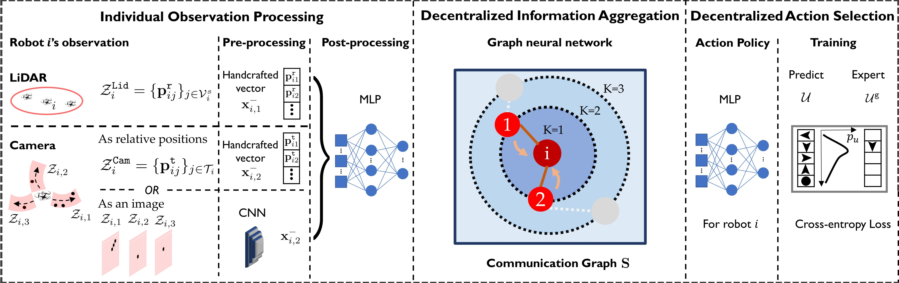
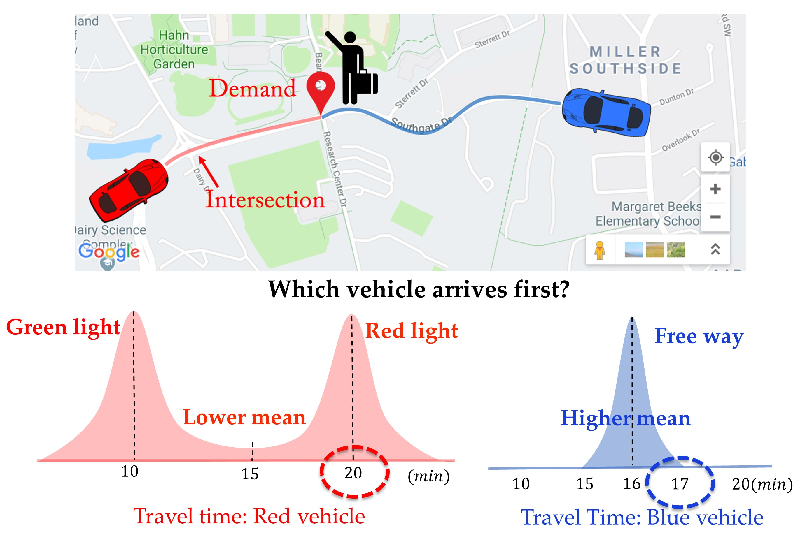

Research
Today, robotics and autonomous systems have been increasingly used in various areas such as manufacturing, military, agriculture, medical sciences, and environmental monitoring. However, most of these systems are fragile and vulnerable to adversarial attacks and uncertain environmental conditions. In most cases, even if a part of the system fails, the entire system performance can be significantly undermined. As robots start to coexist with humans, we need algorithms that can be trusted under real-world (not just ideal) conditions. To this end, my research focuses on enabling security, trustworthiness, and long-term autonomy in robotics and autonomous systems. I devise efficient coordination algorithms with rigorous theoretical guarantees to make robots resilient to attacks and aware of the loss from uncertainty. My long-term goal is to investigate secure, reliable, and scalable multi-robot autonomy when robots use data-driven machine learning techniques in the areas of cyber-physical systems, the Internet of Things, precision agriculture, and smart cities.
[Current Robotics Reports, 2021]: Review on multi-robot coordination and planning in uncertain and adversarial environments.Large-Scale, Decentralized Multi-Robot Coordination through Graph Neural Networks

For long-term operation in large-scale environments, we need scalable and decentralized algorithms. However, with local communications, these decentralized algorithms typically perform worse than their centralized counterparts. Recently, I have been exploring the use of graph neural networks (GNNs) as a tool for automatically synthesizing decentralized planning strategies which are trained to imitate centralized experts.
To this end, I developed a GNN-based imitation learning framework that learns decentralized decision-making for the robots from a centralized expert in small-scale scenarios and generalizes well the learned policies to larger-scale scenarios, e.g., larger environments and larger networks of robots.
Countering Attacks and Failures through Resilient Coordination
Most of the research on robot resiliency focuses on countering deceptive attacks that mislead the robot team. Instead, I have so far focused against denial-of-service (DoS) attacks and failures that can make robots fail or compromise their sensors. I aimed at guaranteeing team performance even if some robots in the team get DoS attacks. To this end, I formulated game-theoretic problems between the robots and the adversary, and designed the first provably near-optimal approximation algorithms for robust combinatorial optimization in various settings including centralized, decentralized communication and short-horizon, long-horizon planning. These algorithms enabled DoS-resilient multi-robot planning in data collection scenarios such as target tracking and environmental exploration. Apart from sensor attacks, the communications among robots can be easily jammed and disrupted by the adversary. Thus, I have recently investigated near-optimal resilient algorithms to protect the team performance from both sensor and communication attacks/failures.
Besides the aforementioned resilient algorithms that can withstand attacks/failures, I am also interested in how robots should react to and recover from attacks/failures. To this end, we developed a resilient coordination framework that enables robots to adapt and recover by reconfiguring team resources to compensate for the performance loss induced by robot failures.
[RA-L+ICRA'19]: Robust submodular maximization against robot/sensor attacks/failures;[ICRA'20], [T-RO accepted]: Decentralized (clique-based) robust submodular maximization against robot/sensor attacks/failures (left video);
[RA-L'21]: Distributed (consensus-based) robust submodular maximization against robot/sensor attacks/failures;
[RSS'20], [T-RO submitted]: Robust team orienteering over a longer planning time against robot/sensor attacks/failures;
[ACC'22 invited paper, T-RO submitted]: Robust monotone maximization against robot/sensor and communication attacks/failures;
[IROS'20]: Resilient coordination to adapt to and recover from robot/sensor failures (right video).
Managing Risk through Stochastic Submodular Optimization
In addition to failures caused by DoS attacks, robots can fail randomly, which adds uncertainty to their performance. More broadly, the uncertainty comes from noisy robot sensing, imperfect robot motion, and unknown environmental conditions. The uncertainty usually puts robots' performance at risk.
A standard strategy to deal with uncertainty is to optimize either the worst-case or the average of the stochastic performance. Both measures only consider a specific point of the distribution while not sufficiently utilizing the spread of the distribution. Instead, I utilized a risk measure, Conditional-Value-at-Risk (CVaR), commonly used for risk management in stocks portfolio optimization. CVaR is calculated based on the distribution of performance outcomes. By optimizing CVaR, the robots can manage the trustworthiness of their decision-making by tuning a risk parameter. For example, with a high risk level, the robots make more adventurous decisions to gain more rewards (one average) but with higher uncertainty. Instead, if robots choose a low risk level, they are more conservative and achieve fewer rewards but with lower uncertainty. To this end, I proposed the first polynomial-time algorithm that gives a bounded approximation for CVaR-based combinatorial optimization. This trustworthy algorithm has been used for enabling risk-aware multi-robot planning in environmental monitoring and mobility-on-demand, stochastic traveling salesman problem, and for handling uncertainty extractions from Bayesian deep learning models.
Along with optimizing CVaR for trustworthy decision-making, we designed a Pareto optimization scheme that adaptively balances maximizing team performance and minimizing risk of failures based on the abundance of heterogeneous team resources.
[WAFR'18], [T-RO accepted]: Risk-aware submodular optimization to deal with uncertainties for multi-robot coordination (left figure).[IROS'20]: Risk-aware planning and assignment for ground vehicles using uncertain perception from aerial vehicles; dealing with uncertain extractions from Bayesian deep learning.
[IROS'21]: Risk-aware submodular optimization for stochastic traveling salesperson problem.
[RA-L+ICRA'22 accepted]: Adaptive and risk-aware target tracking for robot teams with heterogeneous sensors (right video).
Reducing Communication by Self-Triggered Control and Forming Subteams
Many challenges exist in the long-term autonomy of multi-robot systems, such as limited onboard battery capacity, heavy computation and communication load, and dangerous and uncertain outer environments. Among these challenges, my research focuses on reducing communication costs during coordination. Particularly, leveraging self-triggered control, I designed a "when to communicate" strategy that decides when a robot in the team should communicate to seek up-to-date information and when it is safe to operate with possibly outdated information. Even though the communication is restricted, this self-triggered strategy achieves similar performance to the all-time communication strategy, in theory, simulations, and a proof-of-concept experiment. To further reduce communication costs, I devised a "who to communicate with" strategy by forming robot subteams. I proposed a polynomial-time assignment algorithm that provides a provably near-optimal performance even though the robots can only communicate within subteams.
[ICRA'17], [T-ASE'18]: Active target tracking with self-triggered communications in multi-robot teams (left video).[ICRA'20+T-RO'19]: Sensor assignment algorithms to improve observability while tracking targets (right video).
Saving Energy in Team Formation by Distributed Model Predictive Control


We design a distributed model predictive control (MPC) strategy to achieve flocking of multi-agent systems. Based on the relative motion between each pair of neighboring agents, we introduce a neighbor screening protocol, by which each agent only focuses on its neighbors, which have the relative motion that violates the formation of flocks. Then, a truly distributed MPC flocking algorithm is designed with consideration of neighbor screening mechanism. Specifically, at each sampling instant, each agent monitors the information in the networked system, finds its neighbors to form its subsystem, determines the screened neighbor set, and optimizes its plan by collecting the position states within the screened subsystem. Geometric properties of the optimal path are used to guarantee the formation of the flock without inter-agent collision. Finally, the performance and advantage of the proposed distributed MPC flocking strategy are vividly verified by the simulation results.
[IJRNC'17]: Distributed model predictive control for multi-agent flocking via neighbor screening optimization (figures above).[IET'15]: Distributed model predictive control for consensus of sampled-data multi-agent systems with double-integrator dynamics.
[CCC'15]: Cooperative control of linear systems with coupled constraints via distributed model predictive control.
Collaboration Work
Tree Search Application in Robot-Target Game

We introduce and study the problem of planning a trajectory for an agent to carry out a scouting mission while avoiding being detected by an adversarial guard. This introduces a multi-objective version of classical visibility-based target search and pursuit-evasion problem. In our formulation, the agent receives a positive reward for increasing its visibility (by exploring new regions) and a negative penalty every time it is detected by the guard. The objective is to find a finite-horizon path for the agent that balances the trade off between maximizing visibility and minimizing detectability.
We model this problem as a discrete, sequential, two-player, zero-sum game. We use two types of game tree search algorithms to solve this problem: minimax search tree and Monte-Carlo search tree. Both search trees can yield the optimal policy but may require possibly exponential computational time and space. We propose several pruning techniques to reduce the computational cost while still preserving optimality guarantees. Simulation results show that the proposed strategy prunes approximately three orders of magnitude nodes as compared to the brute-force strategy. We also find that the Monte-Carlo search tree saves approximately one order of computational time as compared to the minimax search tree.
[ICRA'19], [AURO'21]: Game tree search for minimizing detectability and maximizing visibility.Spoofing Strategy in Robot-Target Game


We study the problem of designing spoofing signals to corrupt and mislead the output of a Kalman filter. Unlike existing works that focus on detection and filtering algorithms for the observer, we study the problem from the attacker’s point-of-view. In our model, the attacker can corrupt the measurements by adding spoofing signals. The attacker seeks to create a separation between the estimate of the Kalman filter with and without spoofing signals. We present a number of results on how to generate such spoofing signals, while minimizing the signal magnitude. The resulting algorithms are evaluated through simulations along with theoretical proofs.
[ACC'18], [TAC submitted]: Strategies to inject spoofed measurement data to mislead Kalman filter.